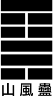

蛊：元亨，利涉大川。先甲三日，后甲三日。
彖曰：蛊，刚上而柔下，巽而止，蛊。蛊，元亨，而天下治也。利涉大川，往有事也。 先甲三日，后甲三日，终则有始，天行也。
象曰：山下有风，蛊；君子以振民育德。
初六：干父之蛊，有子，考无咎，厉终吉。象 曰：干父之蛊，意承考也。
九二：干母之蛊，不可贞。象曰：干母之蛊，得中道也。
九三：干父小有晦，无大咎。象曰：干父之蛊，终无咎也。
六四：裕父之蛊，往见吝。象曰：裕父之蛊，往未得也。
六五：干父之蛊，用誉。象曰：干父之蛊；承以德也。
上九：不事王侯，高尚其事。象曰：不事王侯，志可则也。